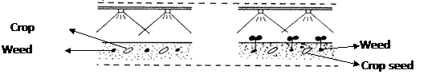

AGRO 304 :: Lecture 10 :: HERBICIDE CLASSIFICATION, FORMULATIONS AND METHODS OF APPLICATION

Herbicide: It is a chemical used to kill some targeted plants.
Principles of chemical weed control
The selectivity exhibited by certain chemicals to cultivated crops in controlling its associated weeds without affecting the crops forms basis for the chemical weed control. Such selectivity may be due to differences in the morphology, differential absorption, differential translocation, differential deactivation etc.
CLASSIFICATION OF HERBICIDES
1) Based on Method of application
- Soil applied herbicides: Herbicide act through root and other underground parts of weeds. Eg. Fluchloralin
- Foliage applied herbicides: Herbicide primarily active on the plant foliage Eg.Glyphosate, Paraquat
2) Based on Mode of action
- Selective herbicide: A herbicide is considered as selective when in a mixed growth of plant species, it kills some species without injuring the others. Eg. Atrazine
- Non-selective herbicide: It destroys majority of treated vegetation Eg. Paraquat
3 Based on mobility
i) Contact herbicide: A contact herbicide kills those plant parts with which it comes in direct contact Eg. Paraquat
ii) Translocated herbicide: Herbicide which tends to move from treated part to untreated areas through xylem / phloem depending on the nature of its molecule. Eg. Glyphosate
4) Based on Time of application
- Pre - plant application (PPI)
Application of herbicides before the crop is planted or sown. Soil application as well as foliar application is done here. For example, fluchloralin can be applied to soil and incorporated before sowing rainfed groundnut while glyphosate can be applied on the foliage of perennial weeds like Cyperus rotundus before planting of any crop.
- Pre – emergence
Application of herbicides before a crop or weed has emerged. In case of annual crops application is done after the sowing of the crop but before the emergence of weeds and this is referred as pre-emergence to the crop while in the case perennial crops it can be said as pre-emergence to weeds. For example soil application by spraying of atrazine on 3rd DAT to sugarcane can be termed as pre-emergence to cane crop while soil application by spraying the same immediately after a rain to control a new flush of weeds in a inter-cultivated orchard can be specified as pre-emergence to weed. Eg. Atrazine, Pendimethalin, Butachlor, Thiobencarb, Pretilachlor

- Post – emergence
Herbicide application after the emergence of crop or weed is referred as post-emergence application. When the weeds grow before the crop plants have emerged through the soil and are killed with a herbicide then it is called as early post-emergence. For example spraying 2,4-D Na salt to control parasitic weed striga in sugarcane is called as post-emergence while spraying of paraquat to control emerged weeds after 10-15 days after planting potato can be called as early post-emergence. Eg. Glyphosate, Paraquat, 2,4-D Na Salt.
- Early post emergence: Another application of herbicide in the slow growing crops like potato, sugarcane, 2-3 week after sowing is classified as early post emergence.
5) Based on molecular structure
- Inorganic compounds
- Organic compounds
FORMULATIONS
Herbicides in their natural state may be solid, liquid, volatile, non-volatile, soluble or insoluble. Hence these have to be made in forms suitable and safe for their field use. An herbicide formulation is prepared by the manufacturer by blending the active ingredient with substances like solvents, inert carriers, surfactants, stickers, stabilizers etc
Objectives in herbicide formulations are;
- Ease of handling
- High controlled activity on the target plants
Need for preparing herbicide formulation
- To have a product with physical properties suitable for use in a variety of types of application equipment and conditions.
- To prepare a product which is effective and economically feasible to use
- To prepare a product which is suitable for storage under local conditions?
Types of formulation
I. Emulsifiable concentrates (EC): A concentrated herbicide formulation containing organic solvent and adjuvants to facilitate emulsification with water eg., Butachlor
ii. Wettable powders (WP): A herbicide is absorbed by an inert carrier together with an added surface acting agent. The material is finely ground so that it may form a suspension when agitated with a required volume of water eg., Atrazine
iii. Granules (G): The inert material (carrier) is given a granular shape and the herbicide (active ingredient) is mixed with sand, clay, vermiculite, finely ground plant parts (ground corn cobs) as carrier material. eg. Alachlor granules.
iv. Water soluble concentrates (WSC): eg. paraquat
METHODS OF APPLICATION
- Spraying
- Broadcasting
Factors influencing the methods of application are
- Weed-crop situation
- Type of herbicides
- Mode of action and selectivity
- Environmental factors
- Cost and convenience of application
Depending on the target site, the herbicides are classified in to
a. Soil applied herbicides
b. Foliage applied or foliar herbicides
Different methods by which these herbicides are applied is tabulated below
|
Soil application |
|
Foliar application |
a. |
Surface |
i. |
Blanket spray |
b. |
Sub surface |
ii. |
Directed spray |
c. |
Band |
iii. |
Protected spray |
d. |
Fumigation |
iv. |
Spot treatment |
e. |
Herbigation |
|
|
Soil appication of herbicides
a. Surface application
Soil active herbicides are applied uniformly on the surface of the soil either by spraying or by broadcasting. The applied herbicides are either left undisturbed or incorporated in to the soil. Incorporation is done to prevent the volatilization and photo-decomposition of the herbicides.
Eg. Fluchoralin – Left undisturbed under irrigated condition
- Incorporated under rainfed condition
b. Subsurface application
It is the application of herbicides in a concentrated band, about 7-10 cm below the soil surface for controlling perennial weeds. For this special type of nozzle is introduced below the soil under the cover of a sweep hood.
Eg. Carbamate herbicides to control Cyperus rotundus
Nitralin herbicides to control Convolvulus arvensis
c. Band application
Application to a restricted band along the crop rows leaving an untreated band in the inter-rows. Later inter-rows are cultivated to remove the weeds. Saving in cost is possible here. For example when a 30 cm wide band of a herbicide applied over a croprows that were spaced 90 cm apart, then two-third cost is saved.
d. Fumigation
Application of volatile chemicals in to confined spaces or in to the soil to produce gas that will destroy weed seeds is called fumigation. Herbicides used for fumigation are called as fumigants. These are good for killing perennial weeds and as well for eliminating weed seeds.
Eg. Methyl bromide, Metham
f. Herbigation
It is the application of herbicides with irigation water both by surface and sprinkler systems. In India farmers apply fluchloralin for chillies and tomato, while in western countries application of EPTC with sprinkler irrigation water is very common in Lucerne.
Foliar application
i. Blanket spray
It is the uniform application of herbicides to standing crops without considering the location of the crop. Only highly selective herbicides are used here. Eg. Spraying 2,4-Ethyl Ester to rice three weeks after transplanting
ii. Directed spray
It is the application of herbicides on weeds in between rows of crops by directing the spray only on weeds avoiding the crop. This could be possible by use of protective shield or hood. For example, spraying glyphosate in between rows of tapioca using hood to control Cyperus rotundus.
iii. Protected spray
It is a method of applying non-selective herbicides on weeds by covering the crops which are wide spaced with polyethylene covers etc. This is expensive and laborious. However, farmers are using this technique for spraying glyphosate to control weeds in jasmine, cassava, banana.
iv. Spot treatment
It is usually done on small areas having serious weed infestation to kill it and to prevent its spread. Rope wick applicator and Herbicide glove are useful here.
Crop |
Herbicide |
Dose |
Trade name and formulation |
Time of application |
1. Rice |
Butachlor |
1.25 |
Machete 50% EC |
Pre-emergence |
|
Thiobencarb |
1.25 |
Thunder 50% EC |
Pre-emergence |
|
Anilophos |
0.40 |
Arozin 30% EC |
Pre-emergence |
|
Fluchloralin |
0.90 |
Basalin 45% EC |
Pre-emergence |
|
Pendimethalin |
0.90 |
Stomp 30% EC |
Pre-emergence |
|
2,4-D Na salt |
1.00 |
Fernoxone 80% SS |
Post-emergence |
2. Rice (Upland direct sown) |
Thiobencarb |
1.25 |
Saturn 50% EC |
Pre-emergence (8 DAS) |
|
Pretilachlor |
0.45 |
Refit 50% EC |
Pre-emergence |
3. Sorghum |
Atrazine |
0.25 |
Atrataf 50% WDP |
Pre-emergence |
4. Ragi (Transplanted) |
Butachlor |
1.25 |
Machete 50% EC |
Pre-emergence |
|
Pendimethalin |
0.75 |
Stomp 30% EC |
Pre-emergence |
5. Maize |
Atrazine |
0.25 |
Atrataf 50% WDP |
Pre-emergence |
6. Cumbu |
Atrazine |
0.25 |
Atrataf 50% WDP |
Pre-emergence |
7. Cotton |
Metolachlor |
1.00 |
Dual 50% EC |
Pre-emergence |
|
Fluchloralin |
1.00 |
Basalin 45% EC |
Pre-emergence |
|
Pendimethalin |
1.00 |
Stomp 30% EC |
Pre-emergence |
|
Diuron |
0.40 |
Karmex 50% WP |
Pre-emergence |
8. Groundnut |
Metolachlor |
1.00 |
Dual 50% EC |
Pre-emergence |
|
Fluchloralin |
0.90 |
Basalin 45% EC |
Pre-emergence |
9. Sunflower |
Fluchloralin |
0.90 |
Basalin 45% EC |
Pre-emergence |
|
Pendimethalin |
0.90 |
Stomp 30% EC |
Pre-emergence |
10.Vegetables |
Fluchloralin |
1.00 |
Basalin 45% EC |
Pre-emergence |
|
Pendimethalin |
1.00 |
Stomp 30% EC |
Pre-emergence |
11. Sugarcane |
Atrazine |
1.00 |
Atrataf 50% WDP |
Pre-emergence |
12. Pulses |
Fluchloralin |
0.70 |
Basalin 45% EC |
Pre-emergence |
|
Pendimethalin |
0.60 |
Stomp 30% EC |
Pre-emergence |
13. Wheat |
Isoproturon |
0.60 |
Arelon 75% WP |
Pre-emergence |
Cropping Systems |
||||
1. Sorghum + |
Pendimethalin |
0.90 |
Stomp 30% EC |
Pre-emergence |
2. Sugarcane + |
Thiobencarb |
1.25 |
Saturn 50% EC |
Pre-emergence |
3. Maize + |
Pendimethalin |
1.00 |
Stomp 30% EC |
Pre-emergence |
|
Alachlor |
2.00 |
Lasso 50% EC |
Pre-emergence |
| Download this lecture as PDF here |